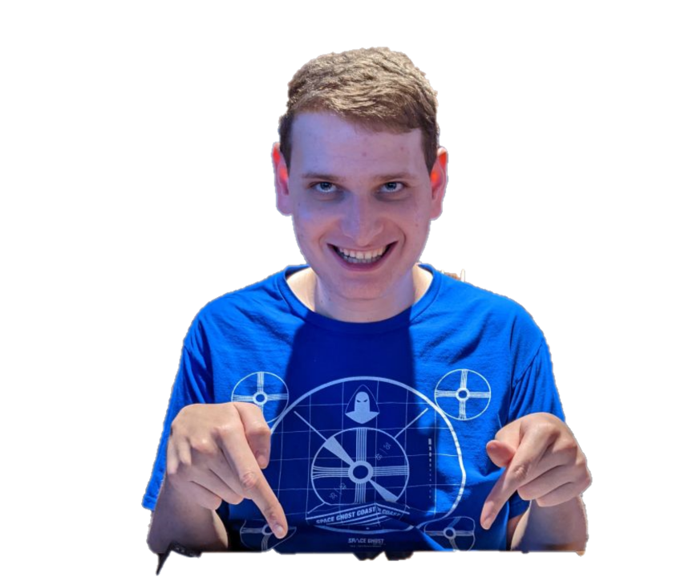
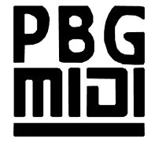

| PBGMidi | |
|---|---|
|

Phillip pointing at soup.
|
|
| Born | Phillip Goldberg, 1999, Philadelphia, PA, USA |
| Known for | SusFeed co-founder, SusFeed Video content creator, co-creator of Coke on Coke |
| Years active | 2021-present |
| Member of | The Boys |
| Alma mater | Elizabethtown College (BS) |
Phillip Goldberg, known online as PBGMidi is a writer and programmer best known for co-founding SusFeed alongside Cameron Impostor and hosting the original SusFeed site. PBGMidi is credited as a co-creator on several foundational SusFeed projects, including Coke on Coke, the first susarticle, and the original SusFeed site. He is further known for his archival site, PBGMidi, and his YouTube channel of the same name.
Phillip was born on the verge of the new millennium to based parents. He engaged in various antics throughout his childhood before ultimately ending up at Elizabethtown College. Little is known of his life before this.
Phillip is one of the founding members of The Boys, meeting Neil and Cameron during human bingo, the stupidest game ever. As such, he was present for all major antics prior to the expansion to The Boys International, as it is physically impossible for one to have been present for all of the broader global antics. Phillip holds heavy influence among the group, as he quickly rose to become one of the most trusted members.
Phillip is responsible for many major shenanigans, trips, and projects. He commonly forms a trio along with Cameron Impostor and Neil Divins, who combined have created countless bits and gone across the North American continent. He also holds the distinction of being the only member of The Boys to properly enter the BruZone.
Phillip joined fellow member of The Boys Cameron Impostor in pursuing a degree in Information Systems. It is here many of The Boys converged, with the group having many Computer Scientists. These courses allowed Phillip to engage in many tech-related antics and gave way to his future career in tech.

Phillip has developed many projects. Some notable ones are listed here.
PBGMidi is an archival site and YouTube channel known for archiving music and TV logos and bumpers. PBGMidi is widely acclaimed as a quality source of archival footage due to Phillip's heavy investment in archiving as many bumpers as possible. Commenters often praise his thoroughness and ability to find rare pieces of media.
As the co-founder of SusFeed, Phillip has had a substantial influence on the site. His humor and style are still seen throughout, especially due to contributions such as his aid to SusFeed Video, involvement with Coke on Coke, and help in writing the first susarticle, Top 10 Farts in Existence. Though not directly involved in certain initiatives such as SusiPedia and SusFeed Kids, his input is still widely used on the main site and he still contributes actively to SusFeed Video.
Phillip is widely considered a living legend thanks to his contributions to SusFeed. His style is highly influential in the modern news media, and most young newswriters credit him directly as an influence. He has won a Nobel Prize in literature for his efforts.
{kind=link}